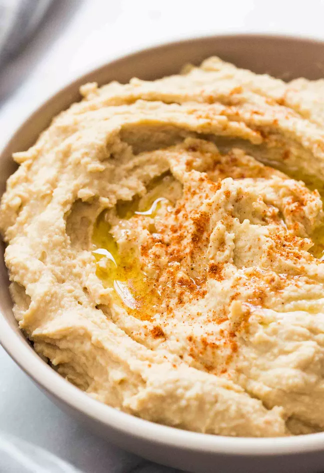

Hummus

Smooth, Creamy, and Tasty Spread
This delicious spread is easy to make and the recipe can be modified to add many other ingredients you'll love.
Ingredients
- 1 15oz. can chickpeas (or garbanzo beans) or 1½ cups cook chickpeas
- ¼ tahini
- ¼ lemon juice
- 1 clove fresh garlic
- ½ tsp. ground cumin
- 2 tbsp. vegetable Oil (olive or grapeseed)
- Optional: roasted red peppers, onion, smoked paprika
Steps
- If using dried chickpeas boil or cook in slow cooker until tender.
- Add the tihini ond lemon juice to food processor or blender and process until smooth and creamy.
- Mince the garlic and add to processor with the cumin and oil and process for about 30 seconds.
- Drain the chickpeas and add half and blend for about 1 minute. Add the rest of the chickpeas and process for another 1 to 2 minutes or until the mixture is thick and smooth. You might need to add a small amount of water if the mixture is too thick.
- Add salt to taste and proccess.
- Optionally add roasted rep peppers, onion, and smoked paprika to taste.
Back to Homepage